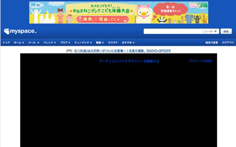
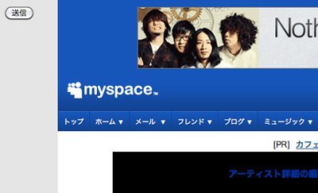

MySpaceのカスタマイズで苦戦したのでメモ。
アーティストアカウントでのカスタマイズの話であり、個人アカウントでの
カスタマイズではないです。
個人アカウントはプロフィール2.0とかいうのが使えるらしい。
※2010.06.19現在の仕様のため今後変わる可能性多いにありです
苦戦の流れから苦肉の対処
まずは基本的なデザイン変更方法
「プロフィール編集」→「アーティスト詳細タブ」→「バイオグラフィー」にHTML/CSSを記述。
ハックくさい方法だが、公式ブログに書かれています。
アーティスト詳細画面で問題発生
実行ボタンが行方不明。
MySpaceのレイアウトそのままで、CSSで色付けしていくだけなら問題ないのですが、
ちょこっとレイアウトを変えたり、不要な部分を表示しないように変更を加えると、
下記のようにプレビュー表示用のCSSがぶつかってしまって必要な実行ボタンまでも
非表示になってしまったり、埋もれてしまったりします。

このままでは、編集できないので、苦肉の策で対処。
javascript: editInterest('bio');
上記スクリプトをブラウザ上で実行（アドレス欄に記述してエンター）
これでなんとかアーティストバイオグラフィーの編集が可能に。
さらにプレビュー画面で問題発生
またまた実行ボタンが行方不明。
編集してプレビューボタンを押すと、アーティスト詳細画面と同様に
実行ボタンが無い。
このままでは、編集を反映できないので、苦肉の策で対処。
table table table div form input
{
display: block;
visibility: visible;
position: absolute;
z-index: 10;
top: 10px;
left: 10px;
}
上記CSSをバイオグラフィーに記述するHTML/CSSに入れる。 すると、以下のように送信ボタンがひょっこり現れる。

そもそも、バイオグラフィーの編集自体できないから、CSS追加できないよって方は、
Firebugで編集してボタンを表示させるべし。
これで何とか編集できるようになった。
その他、MySpaceデザイン編集における悲しい仕様
・CSSのID指定が出来ない。
フォーム入力不可の文字があった、#を受け付けてくれない。
CSSハックの文字も受け付けないのが何個かあり。
■追記2010.07.12
div[id="hoge"]{}
の記述方法でID指定可能。ただしIE6は。。。CSSテスト
・サーバーが不安定。
やたら重かったり、原因不明のサーバーエラーが頻繁に出たり。。
・吐き出されるHTMLがゴリゴリのテーブル組。
CSSによる制御が厳しい。